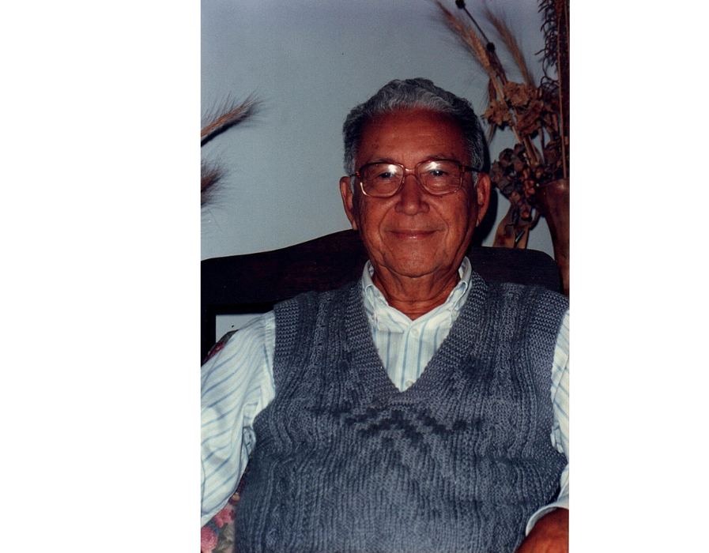

Reverendo Antônio Elias
Homem de Fé, Pai Dedicado, Pastor Amado


Um Legado Eterno
O legado do Reverendo Antônio Elias é como uma chama eterna, continuando a iluminar e aquecer corações muito além de seu tempo terreno. Cada vida tocada por seu ministério é como uma estrela no firmamento, brilhando com a luz do amor e da fé que ele tão fielmente compartilhou.
Seu exemplo de devoção a Deus, amor à família e dedicação ao próximo continua a inspirar gerações, lembrando-nos que uma vida vivida para Cristo é uma vida que ecoa na eternidade.